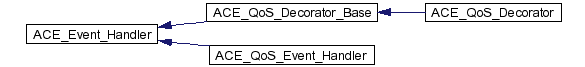

Main Page Class Hierarchy Alphabetical List Compound List File List Compound Members File Members
ACE_QoS Graphical Class Hierarchy
Go to the textual class hierarchy
|  |
|
 |
|
|
Generated on Wed Jan 15 19:26:15 2003 for ACE_QoS by
 1.2.13.1 written by Dimitri van Heesch,
© 1997-2001
1.2.13.1 written by Dimitri van Heesch,
© 1997-2001